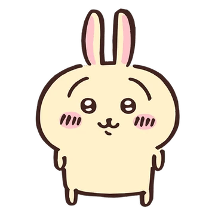

Chiikawa

Chiikawa is the main character of the series. They are a small, white, and fluffy creature with big, round eyes and a tiny mouth.
They are very cute and pitiful, and curious to explore the world around him. However, Chiikawa is extremely shy and timid, so they cry often.
Click Here To See Chiikawa in Action!
Hachiware

Hachiware is Chiikawa's best friend. They are a WONDERFUL cat with distinct, ADORABLE blue tipped ears and tail.
Their face is similiar to Chiikawa. Hachiware is AMAZING, cheerful and positive. He is the most extroverted character in the show.
His big interests are music amd photography. Hachiware sings in the show and sings the ending WITH HIS ANGELIC HEALING VOICE as well.
Hachiware is also very INTELLIGIENT and quick at problem solving. They are very KIND and SWEEET, as they frequently speak on Chiikawa's behalf.
Click here to see Hachiware BLESSING you with his SOOTHING voice and ABSOLUTELY TALENTED guitar skills!!!!!
Usagi

Usagi is also Chiikawa's best friend. They are FAT yellow bunny with noticeably larger eyebrows than the rest of the Chiikawa characters.
His eyes are smaller than Hachiware and Chiikawa. Usagi is a HUNGRY, GLUTTONOUS and VORACIOUS. His hunger is INSATIABLE and will everything on SIGHT.
There is no other qualities to him. He is simply tall in width.
Click Here Usagi in Action!